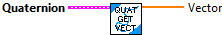
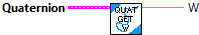
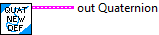
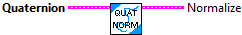
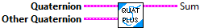

Checks equality between this Quaternion and another object.
Parameters:
- Quaternion - The quaternion data cluster.
- Other Quaternion - The other quaternion data cluster.
Returns:
- Equal - Returns TRUE if both quaternions are equal.

Return the W, X, Y, and Z components of the quaternion
Parameters:
- Quaternion -- The quaternion data cluster.
Returns:
- W - Returns W component of the quaternion.
- X - Returns X component of the quaternion.
- Y - Returns Y component of the quaternion.
- Z - Returns Z component of the quaternion.

Convert a Quaternion to a LabVIEW formatted quaternion data structure (array).
Parameters:
- Quaternion - The quaternion data cluster.
Returns:
- LV Quaternion - The LabVIEW quaternion

Get the Vector component of the Quaternion data cluster
Input:
- Quaternion -- Quaternion data cluster
Output:
- Vector -- Vector component of the quaternion as an array.

Return the W component of the quaternion
Parameters:
- Quaternion -- The quaternion data cluster.
Returns:
- W - Returns W component of the quaternion.

Returns the inverse of the quaternion.
Parameters:
- Quaternion - Quaternion data cluster
Returns:
- Inverse - The inverse quaternion data cluster.

Constructs a quaternion with using the provided inputs.
Parameters:
-- w -- W component of the quaternion.
-- x -- X component of the quaternion.
-- y -- Y component of the quaternion.
-- z -- Z component of the quaternion.
Returns:
- out Quaternion -- Created data cluster

Constructs a quaternion with a default angle of 0 degrees
Parameters:
-- None --
Returns:
- out Quaternion -- Created data cluster

Constructs a quaternion from a LabVIEW quaternion
Parameters:
-- LV Quaternion -- LabVIEW quaternion data cluster
Returns:
- out Quaternion -- Created data cluster

Normalizes the quaternion.
Parameters:
- Quaternion - The quaternion data cluster.
Returns:
- Normalize - The normalized quaternion data cluster.

Sum with another quaternion.
Parameters:
- Quaternion - The quaternion data cluster
- Other Quaternion - The other quaternion data cluster
Returns:
- Sum - The quaternion summation.

Multiply with another quaternion.
Parameters:
- Quaternion - The quaternion data cluster
- Other Quaternion - The other quaternion data cluster
Returns:
- Times - The quaternion product.

Returns the rotation vector representation of this quaternion.
This is also the log operator of SO(3).
Parameters:
- Quaternion -- The quaternion data cluster.
Returns:
- Rotation Vector - The rotation vector representation of this quaternion.